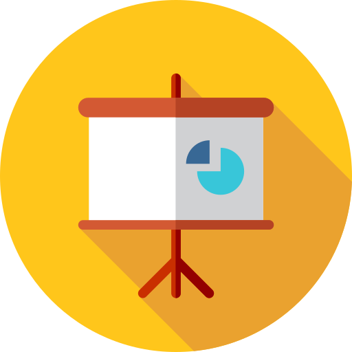

-

-

Code
You can find my code on GitHub
-

Portfolio
My portfolio can you find in Behance , Dribbble , Deviant Art , and Farooqa's Portfolios
-

Talks
You can find my talks and slides in Software Engineer Communities are usually on SpeakerDeck and SlideShare
-
Blog
All my blog post on Farooqa's Blog
-